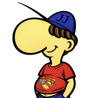
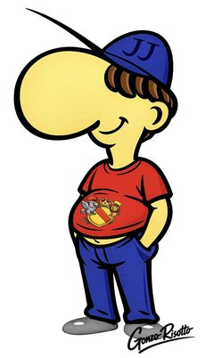

JesmandJosef

Wie gut kennst du Mittelbadisch?
Das Quiz beinhaltet über 1.300 Dialektbegriffe aus dem Mittelbadischen.
Speichere Dir diese Seite als Link auf Deinem Homebildschirm (teilen), und Du hast eine kostenfreie App - ganz ohne Datenklau!
JesmandJosef wünscht Dir viel Spaß!